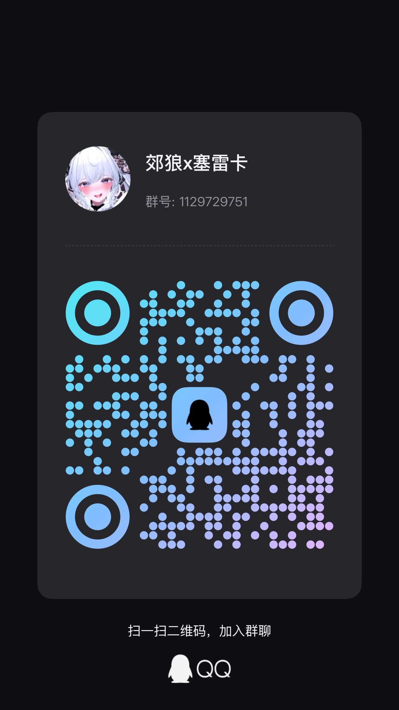

Ricca 1.4.1 · 中／英文相同指纹构建
Windows · DG-LAB V3 / V4 · Opossum · 1.1.0
Ricca × DG-LAB
控制中心
将 HP 伤害、受击动作与剧情场景同步到郊狼和负鼠。支持 V3／V4，电刺激与振动独立设置，并提供手动控制。独立 Windows 软件，不注入、不写游戏内存，不包含游戏本体。
核心功能
格挡不触发惩罚；普通事件重叠取较强反馈，死亡惩罚优先于普通暂停；破甲后本次生命固定 ×1.2，不叠加。实际输出始终受用户设定的硬上限约束。
选择下载通道
1.1.0 已开放百度网盘、COS 直链和 GitHub 下载。
百度网盘大陆通道
百度网盘分享，链接已包含提取码，也可在下方复制。
提取码
尚未发布12g2高速直链备用
通过腾讯云 COS 直接下载 Windows ZIP，无需网盘客户端。
尚未发布GitHub Release备用
版本记录与发布文件。Ricca 使用独立软件包，不复用 Manaka 下载链接。
尚未发布发布版本 1.1.0SHA-256
安装包校验值随发布文件提供程序界面
软件实际页面，使用模拟遥测；点击图片可放大。


原作信息与版权归属
- 游戏全名
- 圣骑士莉卡物语：白翼与淫翼的姐妹
- 开发者／社团
- もぐらソフト
原游戏、角色、插画及相关权利归各自权利人所有。Ricca × DG-LAB 是独立的非官方配套工具，与游戏开发者无官方隶属或背书关系。
本插件及其下载内容不包含游戏本体。
支持与交流
关注开发动态、加入技术交流群，或者请果果喝杯柠檬茶！

技术交流群
QQ群：1129729751

赞赏项目
感谢你对后续开发的支持